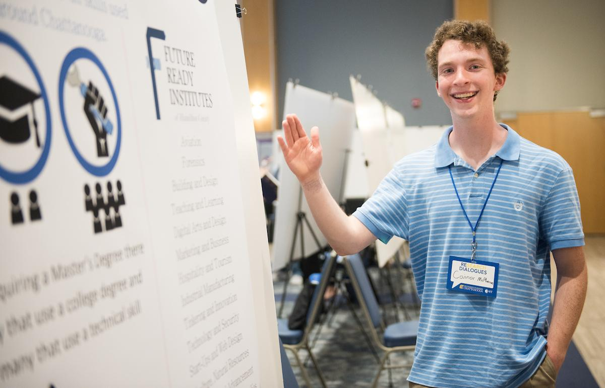

At UTC, I applied for the Honors College's Innovations in Honors program and graduated as an Innovation Scholar in 2020. The Innovations program requires each student to participate in a two-semester Innovation Lab where students use Design Thinking to find and solve problems in Chattanooga. The Rebecca Jones class decided to center on problems in education.
Early on in research, my team decided to focus on Technical Education. Technical Education is the under-utilized sector of jobs that use hands-on skills for careers, such as construction, electrical-systems-repairing, massaging, diesel truck driving, airplane piloting, etc. These skills are specialized abilities that require dedicated facilities to teach, which relegates the education of these jobs to "Techincal Schools" or secondary majors in some Universities. Most students are led to believe that the standard University pathway is the only way to gain a successful career, but Technical certifications are just as good, are in higher demand, and take less time to copmlete.
To support this under-represented side of the education system, the Hamilton County Department of Education established the Future Ready Institutes as programs in Chattanooga high schools to teach these skills to students as early as possible. Our project in the UTC Innovation Lab was to help develop ways to market to high-schoolers the importance and benefits of the Future Ready Institutes.
blablablabalbabalblalbballbalbblablblblbalbalablblbalbablalbablablabla
The Innovation Lab taught me the basics of Design Thinking and the value of rapid prototyping. I worked with professionals and students outside my regular field and discovered my own limits compared to a large-scale project like the Future-Ready Institutes. I learned a lot, and I plan to take my abilities in Design Thinking with me to whatever career I find myself in.

The Honors College at UTC requires each student write a Departmental Honors Thesis for their senior year. For my project, I researched the field of Computing Ethics. Specifically, the ethical perspectives of professionals in software development and curation. When a developer, security consultant, or operations specialist makes any decision about a product, that decision comes from what that programmer values and, given a buildup of similar choices, can affect the project. Disasters like Cambridge Analytica mass-downloading information from Facebook, as well as employee walk-outs and marches like the march by Uber drivers demanding better pay, show that there are major concerns for the held ethical values of programmers.
My research examines on the results of an Ethical Values Survey for Computer Professionals. The survey has 10 scenarios, each one setting one pair of values against each other to discover whether respondents would treat one principle as more valuable than another, or whether they treat them both as neutral. The principles tested are:
Code technologies I handled while working on these projects